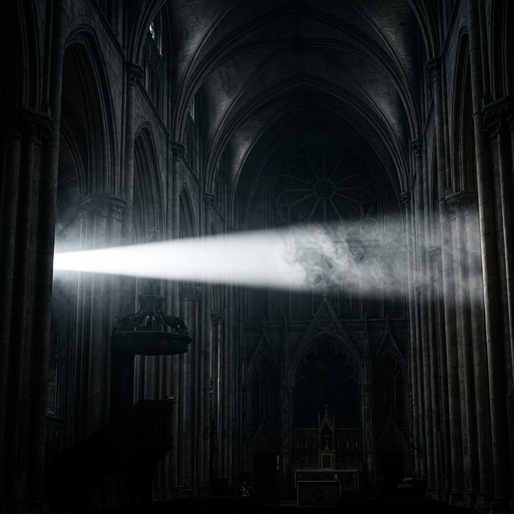

Nel corso di un secolo di storia del cinema, la figura del cacciatore del male ha subito una metamorfosi speculare ai cambiamenti della società: dal monaco medievale e dall'inquisitore degli anni '20, al sacerdote anziano e devoto degli anni '70, passando per il giovane gesuita scettico tormentato dalla crisi d'identità, fino ad arrivare all'investigatore laico del paranormale e all'eroe d'azione contemporaneo.
Monaco medievale, inquisitore dottrinale o sacerdote anziano devoto (come Padre Merrin in L'Esorcista).
Strettamente vincolato al dogma millenario e alle formule in latino codificate nel Rituale Romanum del 1614.
Si affida alla fede assoluta, all'autorità incontestabile della Chiesa e al sacrificio fisico estremo come unica difesa.
Giovane gesuita tormentato dal dubbio (Karras), investigatore laico del paranormale (i coniugi Warren) o figura pop e carismatica (Amorth).
Integra strumenti tecnologici moderni (registratori audio, sensori termici), approcci scientifici, psichiatrici o dinamiche d'azione pop.
Fonde il dubbio esistenziale e razionale con la vulnerabilità psicologica e la ricerca di prove empiriche raccolte direttamente sul campo.
Nonostante le mutazioni stilistiche e commerciali del cinema mainstream, l'archetipo dell'esorcista sopravvive nell'immaginario collettivo poiché poggia su tre elementi cardine che uniscono ogni singola pellicola analizzata:
La consapevolezza che la liberazione dell'innocente richiede un prezzo altissimo da pagare, che si traduce spesso nella perdita della salute fisica o della vita stessa del sacerdote (come nei casi di Merrin, Karras o Emily Rose).
Il cacciatore del male è l'unico personaggio che accetta di sfidare le forze dell'ignoto che si collocano programmaticamente oltre i limiti della pura ragione scientifica, medica e umana.
Il cinema, agendo come un rito collettivo, ci consente di esplorare la grande lotta tra luce e oscurità da una distanza sicura, offrendo una catarsi emotiva profonda che rimane impressa nello spettatore.
